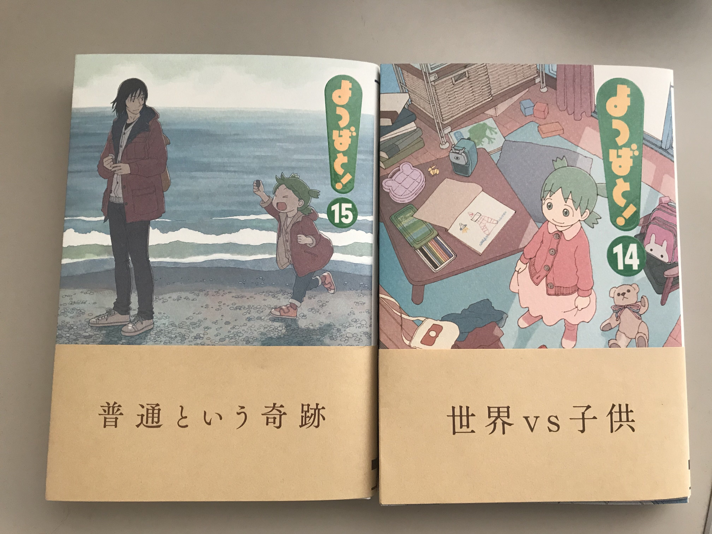

The Basics
- よつばと！ is a popular manga by Kiyohiko Azuma, and is much loved in Japan and around the world.
- It centres around Yotsuba (よつば), a five-year-old girl, who moves to a new town with her dad.

- The everyday plot, relatively simple language and gentle mood make it a popular manga for learners to start with.
- However, without understanding a few common patterns of casual speech (especially Yotsuba's), it can be hard for a beginner to understand.
@kallisto-no-planetarium